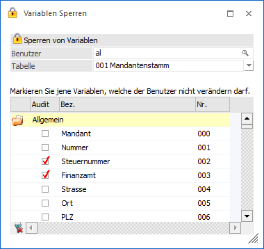
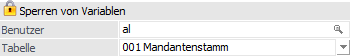
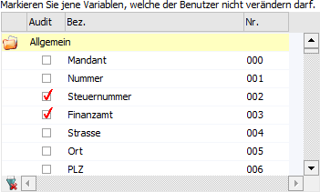
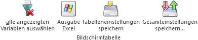

Im Menüpunkt…
1 Benutzer
1 Variablen Sperren
… kann festgelegt werden, welche Variablen von welchem Benutzer bearbeitet bzw. ausgewertet werden dürfen.

Ist eine bestimmte Variable (z.B. der Einstandspreis) für einen Benutzer gesperrt, ist dieser Wert weder am Bildschirm, noch auf einem Ausdruck (mit XXXX überschrieben) oder einer anderen Ausgabe (z.B. Excel) sichtbar. Eine gesperrte Variable kann aber auch nicht editiert werden (z.B. wenn die Variable "BKZ" im Kontenstamm gesperrt wurde, ist das Feld grau hinterlegt und kann nicht angesprochen werden).
Achtung
Es können nur Benutzer gesperrt werden, die NICHT als Administrator definiert worden sind. Des Weiteren haben nur Administratoren die Berechtigung für diesen Programmpunkt.
Sperren von Variablen

Ø Benutzer
An dieser Stelle wird der Name eines bestehenden Benutzers eingetragen, für welchen in der Folge Variablen gesperrt werden sollen. Durch Drücken der F9-Taste oder des "Lupen"-Symbols kann nach allen angelegten Benutzern gesucht werden.
Ø Tabelle
Auswahl der Tabelle, in der bestimmte (oder alle) Variablen für den spezifischen Benutzer gesperrt werden sollen.
Tabelle "Variablen"

In der Variablentabelle werden alle Variablen der im Vorfeld ausgewählten Tabelle angezeigt. Durch Aktivieren der Checkbox "Audit" kann die entsprechende Variable für den Benutzer gesperrt werden.
Hinweis "Sperren von Lagerständen und Lagerwerten"
Der Lagerwert bzw. -stand im Artikelstamm kann nur dadurch gesperrt werden, dass alle zugehörigen Felder für "Zugang", "Abgang" und "Produktion" gesperrt sind.
D.h. erst wenn die Felder "Menge Zugang", "Menge Abgang" und "Menge Produktion" gesperrt sind, wird das Feld "Lagerstand" mit "***" angedruckt.
Das Feld "Lagerwert" wird mit "***" angedruckt, wenn die Felder "Wert Zugang", "Wert Abgang" und
"Wert Produktion" gesperrt sind.
Das Feld "Lagerstand" in "Menge2" wird mit "***" angedruckt, wenn die Felder "Menge2 Zugang",
"Menge2 Abgang" und "Menge2 Produktion" gesperrt sind.
Tabellenbuttons

Ø alle angezeigten Variablen auswählen
Durch Anklicken des Buttons "alle angezeigten Variablen auswählen" werden bei allen Variablen die Checkbox "Audit" aktiviert. Sollten bereits alle Variablen aktiviert worden sein und der Button wird gedrückt dann werden alle Checkboxen deaktiviert.
Ø Ausgabe Excel
Durch Anwahl des Buttons "Ausgabe Excel" wird der Inhalt der Tabelle an Microsoft Excel übergeben.
Ø Tabelleneinstellungen speichern
Die Spalten einer Tabelle können grundsätzlich an beliebige Positionen verschoben, bzw. in der Breite entsprechend angepasst werden. Durch Anwahl des Buttons "Tabelleneinstellungen speichern" werden die Einstellungen benutzerspezifisch gespeichert und bei dem nächsten Aufruf des Programmpunktes wieder vorgeschlagen.
Ø Gesamteinstellungen speichern
Im Gegensatz zu "Tabelleneinstellungen speichern" können mit "Gesamteinstellungen speichern" mehrere Tabellenaufbauten gespeichert und nach Wunsch geladen werden. Zusätzlich werden Sonderfunktionen der Tabelle (z.B. "Spalte gruppieren") ebenfalls bei der Speicherung bedacht.
Buttons

Ø Ok
Durch Anwahl des "Ok"-Buttons bzw. der Taste F5 werden alle vorgenommenen Änderungen gespeichert.
Ø Ende
Durch Drücken des Buttons "Ende" oder der ESC-Taste wird das Fenster geschlossen. Eventuell vorgenommen Änderungen werden nicht gespeichert.